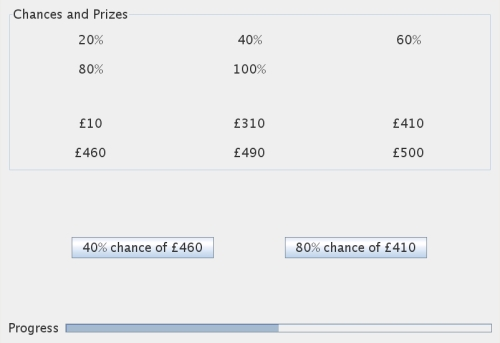

Welcome to this decision making experiment, part of a project in the Cognitive Science Laboratory at Warwick University. This experiment is about your attitudes towards risks and rewards. We'd like you to make a series of choices between pairs of gambles. Each gamble is quite simple and offers a chance of winning some money. For example, consider the following choice:
The left gamble offers an 40% chance of winning £460. To help you understand this gamble, imagine a bag holding 100 ping-pong balls. 40 of the balls are gold and the remaining 60 balls are black. Imagine drawing a ball from the bag without looking. If you draw one of the 40 gold balls you'll win £460. If you draw one of the 60 black balls you won't win anything.
The right gamble offers a 80% chance of winning £410. Imagine another bag with 80 gold balls, 20 black balls, and a prize of £410. Which gamble would you rather play?
We're going to ask you to make a series of choices. Here is an example screen shot from the experiment.

At the top of the screen you can see the chances and prizes on offer throughout the experiment. These are there to give you an idea of what gambles are available. Each choice will be presented on two buttons in the middle of the screen. Think carefully about the choice and click the button of the gamble that you would prefer to play. The next choice will appear automatically. The progress bar at the bottom of the screen will keep track of how far through the experiment you are.
We will use the choices you make to try to get a better understanding of the psychology of decision making. There are no correct answers and you don't have to do any calculations - we are trying to discover your own gut feelings. We are really interested in each choice you make, so please try carefully to imagine each gamble and make choices as honestly as you can.
If you are happy to take part, please press "Begin" to get going. The experiment will take about 20 minutes to complete. If you need a break, you are welcome to get up, go for a wonder, and then come back to finsh the experiment. If you decide that you don't want to take part in the experiment, just close your browser.